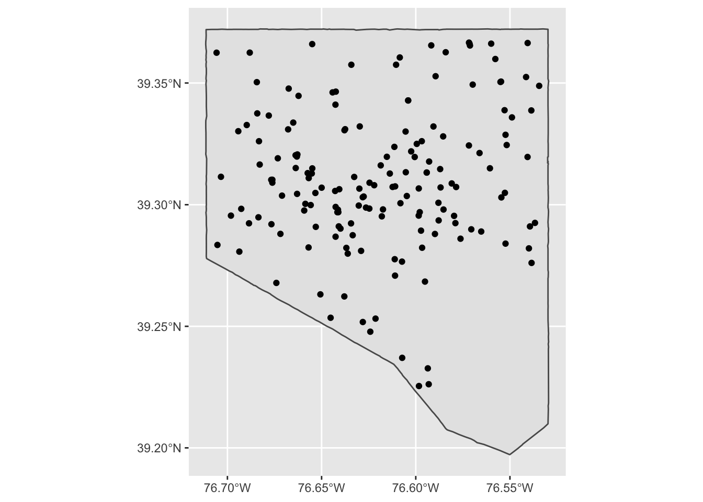
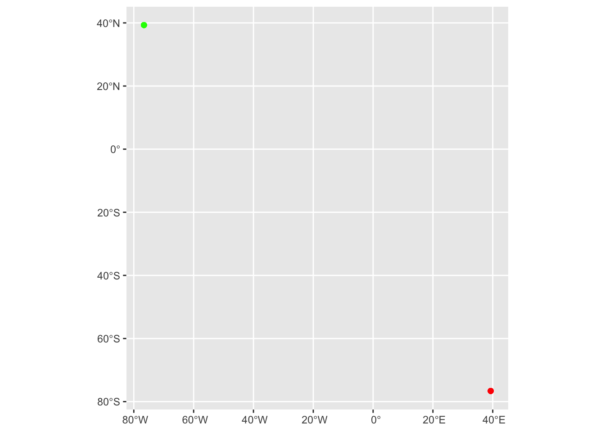
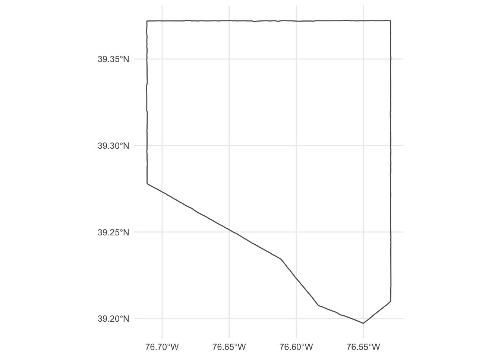
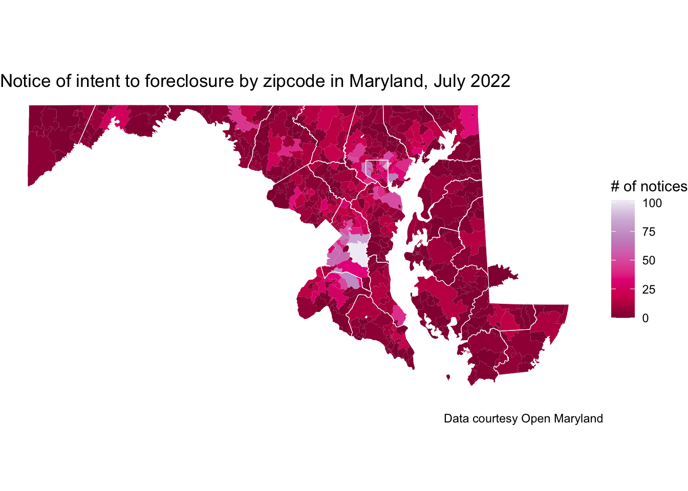

Read tabular data and convert to spatial data with R
Read tabular data with coordinates and convert to sf
The readr::read_csv() function from the readr package is the preferred method for importing a comma separated variable (csv) data file. The package also supports less common tabular data files such as tab separated variable (tsv). You could also use the read.csv from the utils package (included with base R).
For example, you can read a csv file with the names and locations of Baltimore City Public School System programs.
file <- here::here("files/data", "bcps_programs_SY2122.csv")
bcps_programs_df <- read_csv(file = file)Rows: 162 Columns: 7
── Column specification ────────────────────────────────────────────────────────
Delimiter: ","
chr (3): program_name_short, type, category
dbl (3): program_number, lon, lat
lgl (1): swing_space
ℹ Use `spec()` to retrieve the full column specification for this data.
ℹ Specify the column types or set `show_col_types = FALSE` to quiet this message.By default, read_csv prints the number of rows and columns, the selected delimiter and the automatic specification of column types. In general, you should always examine the data after reading it in to make sure the column types are appropriate or if manual specification is needed.
bcps_programs_df# A tibble: 162 × 7
program_name_short program_number type categ…¹ swing…² lon lat
<chr> <dbl> <chr> <chr> <lgl> <dbl> <dbl>
1 Cecil E 7 Traditional E FALSE -76.6 39.3
2 Steuart Hill E 4 Traditional E FALSE -76.6 39.3
3 Lakeland EM 12 Traditional EM FALSE -76.6 39.3
4 Eutaw-Marshburn E 11 Traditional E FALSE -76.6 39.3
5 City Springs EM 8 Charter-Conver… EM FALSE -76.6 39.3
6 James McHenry EM 10 Traditional EM FALSE -76.6 39.3
7 Tench Tilghman EM 13 Traditional EM FALSE -76.6 39.3
8 Stadium School M 15 Traditional M FALSE -76.6 39.3
9 Hilton E 21 Traditional E FALSE -76.7 39.3
10 Johnston Sq E 16 Traditional E FALSE -76.6 39.3
# … with 152 more rows, and abbreviated variable names ¹category, ²swing_spaceOne way to address issues with column specification is to read all columns as character types and convert columns to other types as needed.
bcps_programs_df <- read_csv(file = file, col_types = "ccccccc")
bcps_programs_df <- bcps_programs_df %>%
mutate(
lat = as.numeric(lat),
lon = as.numeric(lon)
)In some cases, you may have a CSV file that does not work the way you expect or a CSV file that you want to validate using an established schema. You can use tools such as CSVLint or Data Curator (from the Queensland Cyber Infrastructure Foundation) to accomplish this task.
You can then use st_as_sf() function from the sf package to convert the data frame read into a simple feature object. You must specify the name of the coordinate columns and the expected coordinate reference system. By default, the st_as_sf returns a tibble data frame.
bcps_programs_sf <-
st_as_sf(
x = bcps_programs_df,
coords = c("lon", "lat"),
crs = 4326
)
class(bcps_programs_sf)[1] "sf" "tbl_df" "tbl" "data.frame"ggplot() +
geom_sf(data = md_counties[3,]) +
geom_sf(data = bcps_programs_sf)
This function can be tricky for novice users. Missing values in coordinate columns results in an error by default (set na.fail = FALSE to change this).
bcps_programs_df_error <- bcps_programs_df
bcps_programs_df_error[1, ]$lon <- NA
st_as_sf(
x = bcps_programs_df_error,
coords = c("lon", "lat"),
crs = 4326
)Error in st_as_sf.data.frame(x = bcps_programs_df_error, coords = c("lon", : missing values in coordinates not allowedIf you reverse the order of the latitude and longitude columns, the function returns an sf object—but with the points at incorrect or nonexistent locations.
bcps_programs_coord_rev <-
st_as_sf(
x = bcps_programs_df,
coords = c("lat", "lon"),
crs = 4326
)
ggplot() +
geom_sf(data = bcps_programs_sf, color = "green") +
geom_sf(data = bcps_programs_coord_rev, color = "red")
Tom MacWright (creator geojson.io and the OpenStreetMap iD editor) documented the inconsistent order of latitude and longitude across a range of file formats, APIs, and service specifications. If you’re wondering, which order is right, MacWright explains: “Neither. This is an opinion with no right answer. Geographical tradition favors lat, lon. Math and software prefer lon, lat.”
Working with other types of tabular data follows a similar work flow.
Date from Excel files (xls or xslx) can be imported using
readxl::read_excel. Both readr and readxl work with local file paths or with remote files if you provide a url.Data from Google Sheets can be accessed with
googlesheets4::read_sheet. Google Sheets can be particularly useful when collaborating on a data project with people who can’t use a GIS application or programming language.Nested data from a JSON file can be read with
jsonlite::read_jsonand converted to a data frame by settingsimplifyVector = TRUE.
The convenience of automatic formatting in Microsoft Excel can cause with automatic rounding of numeric coordinates and automatic formatting of non-date values as date.
The sf package also supports reading Excel and CSV files directly but it returns a tibble (not an sf object) when trying to read data where the geometry is contained in numeric coordinate columns.
bcps_programs_st_read <-
st_read(
dsn = file,
coords = c("lon", "lat"),
crs = 4326
)Reading layer `bcps_programs_SY2122' from data source
`/Users/elipousson/Documents/GitHub/bldgspatialdata/files/data/bcps_programs_SY2122.csv'
using driver `CSV'Warning: no simple feature geometries present: returning a data.frame or tbl_dfHowever, st_read does work with a CSV file where the geometry has been encoded as well-known text such as the sample “baltimore_city_wkt.csv” file.
dsn <- here::here("files/data", "baltimore_city_wkt.csv")
baltimore_city <-
st_read(
dsn = dsn,
crs = 4326
)Reading layer `baltimore_city_wkt' from data source
`/Users/elipousson/Documents/GitHub/bldgspatialdata/files/data/baltimore_city_wkt.csv'
using driver `CSV'
Simple feature collection with 1 feature and 9 fields
Geometry type: MULTIPOLYGON
Dimension: XY
Bounding box: xmin: -76.71152 ymin: 39.19721 xmax: -76.52946 ymax: 39.37221
Geodetic CRS: WGS 84ggplot() +
geom_sf(data = baltimore_city, fill = NA) +
theme_minimal()
Read and geocode tabular data with addresses
What if you do not have coordinates? Geocoding address data is a common task and there are many ways to do this using R and a variety of other tools. The easiest package in most cases is the tidygeocoder package. This package supports over a dozen different geocoding services including Nominatim and the US Census Burearu geocoder (which are both free to use without an API key).
Unfortunately, accurately geocoding address data can be challenging. This toppic is addresed in more detail in the example on cleaning data.
Read tabular data and join geometry based on a named area or location
One last common way to add geometry to tabular data is to join the table to geometry based on a named area (typically an administrative boundary) or a named location.
file_url <- "https://opendata.maryland.gov/api/views/ftsr-vapt/rows.csv"
md_foreclosure <- file_url %>%
read_csv(show_col_types = FALSE) %>%
tidyr::pivot_longer(
cols = !contains("Zip"),
names_to = "date",
values_to = "count"
)For data organized by zipcode can be matched to geometry for Zip Code Tabulation Areas (or ZCTAs) downloaded from the U.S. Census Bureau API with the tigris::zcta function and saved to a GeoPackage file “md_zctas.gpkg”. The “Zip” column should be equivalent to the “ZCTA5CE20” column from md_zctas.
md_zctas <- read_sf(here::here("files/data/md_zctas.gpkg"))
md_foreclosure <-
left_join(
md_foreclosure,
md_zctas,
by = c("Zip" = "ZCTA5CE20")
)
md_foreclosure_sf <- st_as_sf(md_foreclosure)
md_foreclosure_202207 <- filter(md_foreclosure_sf, date == "July 2022")
ggplot() +
geom_sf(data = md_foreclosure_202207, aes(fill = count), color = NA) +
geom_sf(data = md_counties, fill = NA, color = "white", size = 0.2) +
scale_fill_distiller(palette = "PuRd") +
theme_void() +
labs(
title = "Notice of intent to foreclosure by zipcode in Maryland, July 2022",
fill = "# of notices",
caption = "Data courtesy Open Maryland")